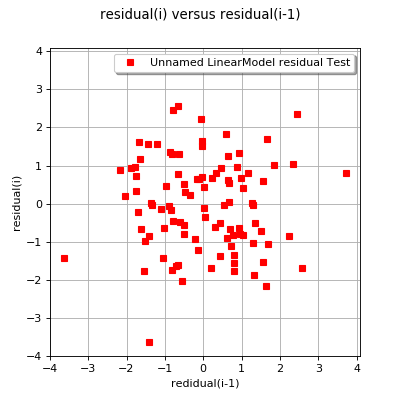

VisualTest_DrawLinearModelResidual¶
(Source code, png, hires.png, pdf)
{kind=link}
{kind=link}

-
VisualTest_DrawLinearModelResidual(sample1, sample2, linearModel)¶ Draw a linear model residual plot.
Parameters: - sample1, sample2 : 2-d sequence of float
Samples to draw.
- linearModel :
LinearModel Linear model to plot.
Returns: - graph : class:~openturns.Graph
The graph object
Examples
>>> import openturns as ot >>> from openturns.viewer import View >>> ot.RandomGenerator.SetSeed(0) >>> dimension = 2 >>> R = ot.CorrelationMatrix(dimension) >>> R[0, 1] = 0.8 >>> distribution = ot.Normal([3.0] * dimension, [2.0]* dimension, R) >>> size = 100 >>> sample2D = distribution.getSample(size) >>> firstSample = ot.Sample(size, 1) >>> secondSample = ot.Sample(size, 1) >>> for i in range(size): ... firstSample[i] = ot.Point(1, sample2D[i, 0]) ... secondSample[i] = ot.Point(1, sample2D[i, 1]) >>> lmtest = ot.LinearModelFactory().build(firstSample, secondSample) >>> drawLinearModelVTest = ot.VisualTest.DrawLinearModelResidual(firstSample, secondSample, lmtest) >>> View(drawLinearModelVTest).show()